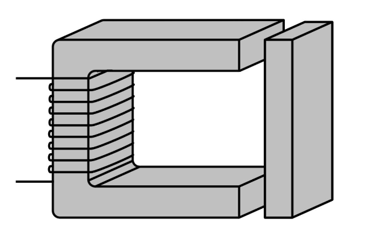

class: center, middle # EE-362 # Review of Electromechanical Energy Conversion ## Ozan Keysan [keysan.me](http://keysan.me) Office: C-113 <span class="meta">•</span> Tel: 210 7586 --- #Lorenz Force ## \\(\vec{F} = \vec{J} \times \vec{B}\\)  --- # Lorenz Force Applications - ### [Force Demo](http://www.youtube.com/watch?v=K9ks_DNPAFQ) - ### [Homopolar Motor](http://www.youtube.com/watch?v=kJKuNcgbW-o) - ### [Wolrd's Simplest Electric Train](https://www.youtube.com/watch?v=J9b0J29OzAU) - ### [Electromagnetic Aircraft Launcher](https://www.youtube.com/watch?v=T1Icd3MFmWc) - ### [Navy Railgun](https://www.youtube.com/watch?v=NmFeRYPNP88), [Railgun-2](https://www.youtube.com/watch?v=8UKk84wjBw0) - ### [Aselsan Tufan](https://www.youtube.com/watch?v=O5GtuQk3t44) - ### [Aselsan Tufan-2](https://www.youtube.com/watch?v=El4VQko6GFI) --- # Determine the direction of rotation <img src="./images/emec_ex1.png" alt="Drawing" style="width:600px;"/> --- #What would happen in the device below?  --- # Link Between Electrical and Mechanical Systems <img src="./images/lossless_magnetic_system.png" alt="Drawing" style="width: 700px;"/> ### Electric Energy Input = Stored Magnetic Energy + Mechanical Work --- # Review: Magnetic Energy  --- # Review: Magnetic Energy ## \\(W\_{stored} = \int_0^\lambda i(\lambda) d\lambda \\) -- ## or from B-H curve ## \\(W\_{stored} = \int \_{volume } (\int_0^B H dB) \\) --- # Magnetic Energy ### In Linear Systems: -- ## Magnetic Energy = Magnetic Co-Energy -- ## Magnetic Energy + Magnetic Co-Energy = \\(\lambda i\\) -- ### Thus (only in linear systems) ## W(magnetic) = \\(\dfrac{1}{2} \lambda i = \dfrac{1}{2} L i^2 =\dfrac{1}{2L} \lambda^2 \\) --- # Force from the Stored Energy <img src="./images/DSC09854-SCottish-festival.jpg" alt="Drawing" style="width: 600px;"/> -- ## Derivative of Energy w.r.t. position gives the force! --- # Force from Stored Energy ### Take derivative of magnetic energy -- ### \\(Force = - \dfrac{\partial W\_{mag}(\lambda, x)}{\partial x} |\_{\lambda = constant}\\) ### Some useful reading: - #### [MIT From Lasers to Motors](http://ocw.mit.edu/courses/electrical-engineering-and-computer-science/6-007-electromagnetic-energy-from-motors-to-lasers-spring-2011/readings/MIT6_007S11_forces.pdf) --- # Force from Stored Energy ### \\(Force = - \dfrac{\partial W\_{mag}(\lambda, x)}{\partial x} |\_{\lambda = constant}\\) -- ## For Linear Systems ### \\(Force = - \dfrac{\partial}{\partial x} (\dfrac{\lambda^2}{2 L(x)}) =\dfrac{ \lambda^2}{2 L(x)^2} (\dfrac{d L(x)}{dx}) \\) -- ### \\(Force = \dfrac{1}{2} i^2 \dfrac{d L(x)}{dx} \\) --- # Summary ## Magnetic Circuit Tries -- - ## To reduce \\(W\_{magnetic}\\) if \\(\Phi\\) is constant -- - ## To maximize the inductance -- - ## To minimize the reluctance (\\(L=N^2/R\\)) --- # Some Applications -- ## How a speaker works? <img src="https://animagraffs.com/wp-content/uploads/loudspeaker/loudspeaker.gif" alt="Drawing" style="width: 600px;"/> --- <img src="https://animagraffs.com/wp-content/uploads/loudspeaker/magnet.gif" alt="Drawing" style="width: 500px;"/> ## You can think it is just a basic solenoid, but it's more complex than that. ## [How Speakers Work](http://animagraffs.com/loudspeaker/) #### ([Reading assignment](http://ocw.mit.edu/courses/electrical-engineering-and-computer-science/6-007-electromagnetic-energy-from-motors-to-lasers-spring-2011/lecture-notes/MIT6_007S11_lec13.pdf)) --- # Who is this guy? <img src="https://fm.cnbc.com/applications/cnbc.com/resources/img/editorial/2016/03/23/103492187-AP_37716130966.1910x1000.jpg" alt="Drawing" style="width: 700px;"/> --- # [Amar Bose](http://www.rle.mit.edu/bose/) ### Founder of Bose Corp, MIT Professor, Electrical Engineering <img src="https://brain-images-ssl.cdn.dixons.com/7/4/10169747/l_10169747_011.jpg" alt="Drawing" style="width: 300px;"/> ### [How Amar Bose used research to build better speakers](https://www.cnbc.com/2016/03/24/how-amar-bose-used-research-to-build-better-speakers.html) ### Now MIT owns the [majority shares](http://archive.boston.com/business/technology/articles/2011/04/30/mit_is_new_majority_owner_of_bose/) in Bose Corp. --- # Magnetism in Medicine: -- # [Malaria](https://www.youtube.com/watch?v=A2-XTlHBf_4) <img src="http://3.bp.blogspot.com/-gUOAxhCXjP0/UAfo1I4Y1uI/AAAAAAAAHGo/tO885WRQXrc/s1600/Malaria+Disease2.jpg" alt="Drawing" style="width: 300px;"/> --- # Malaria vs Permeability ## Diagnosis using Magnetic Alignment <img src="http://images.iop.org/objects/phw/news/16/10/27/PW-2012-10-30-magnetic-malaria_figure2.jpg" alt="Drawing" style="width: 700px;"/> ### [Physicists detect malaria using light and magnets](http://physicsworld.com/cws/article/news/2012/oct/30/physicists-detect-malaria-using-light-and-magnets) ### [Magnets diagnose malaria in minutes](http://news.mit.edu/2014/new-method-diagnose-malaria-0831) --- # Malaria Treatment <img src="http://www.cmu.edu/news/stories/archives/2016/june/images/malaria_853x480-min.jpg" alt="Drawing" style="width: 700px;"/> ### [Malaria's Magnetic Properties May Pull Treatments Forward](http://www.cmu.edu/news/stories/archives/2016/june/malaria-magnetic-treatment.html) --- # Summary ## Magnetic Circuit Tries - ## To reduce \\(W\_{magnetic}\\) if \\(\Phi\\) is constant - ## To maximize the inductance - ## To minimize the reluctance (\\(L=N^2/R\\)) --- ## Mechanical Power & Energy: -- ## Linear Motion: -- \\(P = F v = F \dfrac{dx}{dt}\\) Watt -- ## Rotational: -- \\(P=T \omega = T \dfrac{d\theta}{dt} \\) Watt -- ## Linear Motion: \\(W = \int P dt = F x \\) Joule -- ## Rotational: \\(W= \int P dt = T \theta \\) Joule --- ## Linear Acceleration: -- ## \\(F = m a = m \dfrac{dv}{dt}\\) -- ## Rotational Acceleration: -- ## \\(T=J \dfrac{d\omega}{dt} \\) Watt ## J: Rotational Inertia (\\(kgm^2\\)) --- ## Can you guess the torque expression in this circuit? <img src="https://raw.githubusercontent.com/ozank/ozank.github.io/master/presentations/images/single_phase_reluctance_motor.png" alt="Drawing" style="width: 700px;"/> --- # Rotational Sytems: -- ## Remember in linear systems: ### \\(f = - \dfrac{\partial W\_{mag}(\Phi, x)}{\partial x} |\_{\Phi = constant}\\) -- ### In rotational systems, just take the derivative wrt \\( \theta \\) not \\( x \\): -- ### \\(T = - \dfrac{\partial W\_{mag}(\Phi, \theta)}{\partial \theta} |\_{\Phi = constant}\\) #### [More information](http://engineering.nyu.edu/mechatronics/Control_Lab/Criag/Craig_RPI/SenActinMecha/EM_Motion_Fundamentals_2.pdf) --- # Rotational Sytems: ## Take the derivative wrt \\( \theta \\) not \\( x \\): -- ## \\(T = - \dfrac{1}{2}\Phi^2\dfrac{d R(\theta)}{d \theta} |\_{\Phi = constant}\\) ### or alternatively ## \\(T = \dfrac{1}{2}I^2\dfrac{d L(\theta)}{d \theta} |\_{i = constant}\\) --- # How can we achieve a constant rotation? -- ## Single Phase Reluctance Motor -- <img src="http://electrical-engineering-portal.com/wp-content/uploads/simple-reluctance-motor.gif" alt="Drawing" style="width: 400px;"/> --- # Single Phase Reluctance Motor -- <img src="./images/ee361/step_motor.gif" alt="Drawing" style="width: 400px;"/> ### [Magnetic Flux](https://www.youtube.com/watch?v=hDJnLt7cBTY), [Micro-stepping for higher accuracy](https://www.youtube.com/watch?v=eyqwLiowZiU) --- # Reluctance Motors <img src="http://www.motioncontroltips.com/wp-content/uploads/2016/12/switched-reluctance-motor-with-iron-only-rotor-copy.jpg" alt="Drawing" style="width: 600px;"/> ### [More info](http://electrical-engineering-portal.com/characteristics-and-work-principles-of-switched-reluctance-sr-motor) --- ## Magnetorquer: How small satellites align themselves? <img src="https://nanoavionics.com/wp-content/uploads/2020/07/Magnetorques_1-1-1024x946rez.png" alt="Drawing" style="width: 400px;"/> [Magnetorquer](https://blog.satsearch.co/2019-08-21-magnetorquers-an-overview-of-magnetic-torquer-products-available-on-the-global-marketplace-for-space.html) [CubeSat Magnetorquer](https://nanoavionics.com/cubesat-components/cubesat-magnetorquer-satbus-mtq/) --- # Who is this guy? <img src="https://www.jamesdysonaward.org/media/1004/jd-cutout.png" alt="Drawing" style="width: 500px;"/> --- # James Dyson <img src="https://www.donanimhaber.com/images/images/haber/73464/Dyson070912_2331798b.jpg" alt="Drawing" style="width: 700px;"/> ### [Digital Motor](https://www.youtube.com/watch?v=-zg593Zw6PQ), [Operating Principle](https://www.youtube.com/watch?v=xMtXrIqlGO0), [Manufacturing](https://www.youtube.com/watch?v=bSdbsnEt70c) --- # Dyson uses Reluctance Motors <img src="https://larryfire.files.wordpress.com/2010/04/dyson-digital-motor-exploded-view1.jpg" alt="Drawing" style="width: 800px;"/> ### [Digital Motor](https://www.youtube.com/watch?v=-zg593Zw6PQ), [Operating Principle](https://www.youtube.com/watch?v=xMtXrIqlGO0), [Manufacturing](https://www.youtube.com/watch?v=bSdbsnEt70c) --- # Summary ## Magnetic Circuit Tries -- - ### To maximize the inductance, to minimize the reluctance (\\(L=N^2/R\\)) - ### To decrease the magnetic energy (increase co-energy) ## Rotational systems are similar to linear systems, but take the derivative of magnetic energy in terms of \\(\theta\\) instead of \\(x\\). --- ## You can download this presentation from: [keysan.me/ee362](http://keysan.me/ee362)